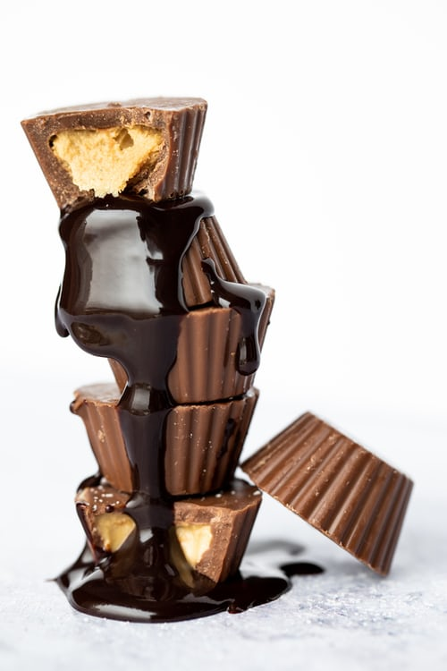
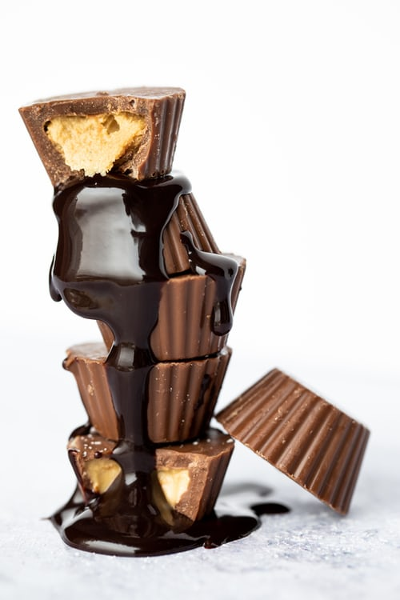

About
Food Corner is a foodie Corner that was launched in 2020 by a Indian chef based in Virginia, USA. Food Corner features content for all levels of cooks and foodies. Our recipes and how-to guides are provided by some of the best chefs in the world. You can take these recipes through your culinary lifetime.
 
